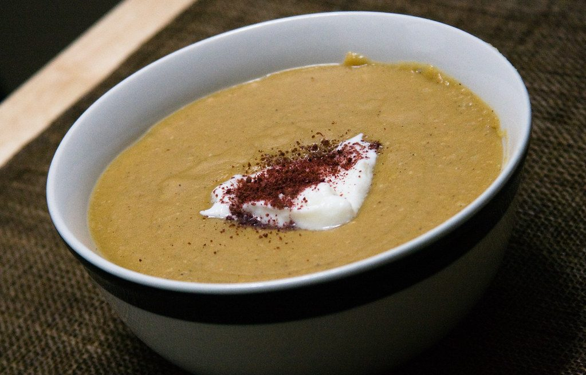

Budget Meal Prep: Eat High-Protein for Under $50 a Week
A complete weekly grocery list with prices, and five recipes built on the cheapest high-protein foods there are: beans, lentils, eggs, tuna, and chicken thighs.

Black beans + rice: complete protein, about $1.60 a serving.
High-protein eating has a reputation for being expensive, and it can be — if your protein comes from steak and salmon. But the cheapest protein per gram in any grocery store is beans, lentils, eggs, canned tuna, and chicken thighs. This plan is built entirely on those five, and it still averages 25–35 g of protein per meal.
The grocery list below covers all five recipes plus breakfasts and snacks for one person for a week. Prices are estimates based on average US grocery prices (November 2026) — your store will vary a few dollars either way, but the total lands under $50 in most of the country.
The $50 Grocery List
| Item | Qty | Est. price |
|---|---|---|
| Chicken thighs, boneless/skinless | 2 lb | $5.50 |
| Eggs | 18-count | $4.50 |
| Canned tuna in water | 4 cans | $5.00 |
| Black beans, canned | 3 cans | $3.30 |
| Chickpeas, canned | 2 cans | $2.20 |
| Red lentils, dry | 1 lb | $1.80 |
| Long-grain rice | 2 lb | $2.00 |
| Rolled oats | 42 oz canister | $3.50 |
| Plain Greek yogurt, nonfat | 32 oz | $4.00 |
| Milk | ½ gallon | $3.50 |
| Green cabbage | 1 head | $1.50 |
| Onions | 3 lb bag | $2.50 |
| Frozen mixed vegetables | 2 bags | $3.00 |
| Bananas + seasonal fruit | — | $3.00 |
| Tortillas or bread | 1 pack | $2.50 |
| Total | $47.80 |
Pantry staples (oil, salt, pepper, soy sauce, cumin, chili powder, garlic) are assumed on hand — they cost pennies per serving and last months. If you're starting from zero, add about $15 one time for a basic spice and oil setup.
The budget rule: protein is where the money goes, so buy it on sale and freeze it. Chicken thighs under $2/lb, tuna under $1.25/can, and eggs under $3/dozen are all buy-two prices.
1. Black Bean & Rice Bowls — $1.60/serving
Beans and rice together form a complete protein, and the smoky cumin-paprika seasoning makes this taste like far more than it costs.
Black Bean & Rice Bowls
Ingredients
- 2 cans (15 oz each) black beans, drained and rinsed
- 1 onion, diced; 3 cloves garlic, minced
- 1 tsp cumin, 1 tsp smoked paprika
- 1 cup frozen corn
- 2 cups cooked rice
- Juice of 1 lime, 1 tbsp olive oil; salt and pepper
Steps
- Cook the onion in oil over medium heat, 4 minutes. Add the garlic, cumin, and paprika; cook 1 minute.
- Add the beans and ½ cup water. Simmer 10 minutes, mashing a few beans to thicken.
- Stir in the corn and lime juice. Season with salt and pepper.
- Divide the rice and beans into 4 containers.
| Calories | Protein | Carbs | Fat | Cost |
|---|---|---|---|---|
| 480 | 22 g | 72 g | 11 g | ~$1.60 |
2. Red Lentil Soup — $1.10/serving
The cheapest recipe on this site, and one of the best. It freezes for 3 months, so double the batch whenever lentils are on sale.
Red Lentil Soup
Ingredients
- 2 cups dry red lentils, rinsed
- 1 onion, diced; 2 carrots, diced
- 3 cloves garlic, minced
- 1 tsp cumin, ½ tsp turmeric
- 6 cups vegetable or chicken broth
- Juice of 1 lemon, 1 tbsp olive oil; salt and pepper
Steps
- Cook the onion and carrots in oil over medium heat, 5 minutes. Add the garlic, cumin, and turmeric; cook 1 minute.
- Add the lentils and broth. Bring to a boil, then simmer 20–25 minutes until the lentils break down.
- Blend half the soup (or all of it) until creamy. Stir in the lemon juice.
- Season with salt and pepper. Divide into 6 containers; freeze up to 3 months.
| Calories | Protein | Carbs | Fat | Cost |
|---|---|---|---|---|
| 310 | 18 g | 48 g | 5 g | ~$1.10 |

Red lentil soup: $1.10 a serving, and it freezes for months.
3. Egg & Veggie Scramble Boxes — $1.40/serving
Eggs are the cheapest complete protein in the store. These boxes work for breakfast or a light lunch, and they reheat in 90 seconds.
Egg & Veggie Scramble Boxes
Ingredients
- 10 large eggs
- 1 bell pepper, diced; 2 cups baby spinach
- ½ cup shredded cheddar
- 1 tbsp butter; salt and pepper
- 4 slices toast or tortillas, to serve
Steps
- Whisk the eggs with salt and pepper.
- Melt the butter in a large skillet over medium heat. Cook the pepper 3 minutes, then add the spinach until wilted.
- Pour in the eggs and cook gently, stirring, until just set, 3–4 minutes. Stir in the cheese off the heat.
- Divide into 4 containers. Serve with toast or tortillas.
| Calories | Protein | Carbs | Fat | Cost |
|---|---|---|---|---|
| 340 | 24 g | 8 g | 22 g | ~$1.40 |
4. Tuna Chickpea Salad — $2.00/serving
No cooking at all — 10 minutes from pantry to container. At 32 g of protein, it's the highest-protein no-cook lunch we know.
Tuna Chickpea Salad
Ingredients
- 3 cans (5 oz each) tuna in water, drained
- 1 can (15 oz) chickpeas, drained and rinsed
- ½ red onion, finely diced; 1 cucumber, diced
- Juice of 1 lemon, 3 tbsp olive oil
- 1 tsp Dijon mustard; salt, pepper, and chopped parsley
Steps
- Whisk the lemon juice, olive oil, mustard, salt, and pepper in a large bowl.
- Add the tuna, chickpeas, onion, and cucumber. Toss to combine.
- Stir in the parsley. Divide into 4 containers.
- Keeps 3–4 days refrigerated. Serve over greens or with crackers.
| Calories | Protein | Carbs | Fat | Cost |
|---|---|---|---|---|
| 420 | 32 g | 28 g | 18 g | ~$2.00 |
5. Chicken Thigh & Cabbage Stir-Fry — $2.30/serving
Chicken thighs cost about half what breasts do, and they're more forgiving — they stay juicy even if you overcook them by a minute. Cabbage is the cheapest vegetable per pound and it holds up in the fridge for days.
Chicken Thigh & Cabbage Stir-Fry
Ingredients
- 1½ lb boneless, skinless chicken thighs, sliced
- ½ head green cabbage, shredded
- 2 carrots, julienned
- 3 tbsp soy sauce, 1 tbsp honey
- 1 tsp grated ginger, 2 cloves garlic, minced
- 1 tbsp sesame oil; 2 cups cooked rice, to serve
Steps
- Mix the soy sauce, honey, ginger, and garlic in a small bowl.
- Cook the chicken in sesame oil in a large skillet or wok over high heat, 6–7 minutes, until browned. Remove and set aside.
- Stir-fry the cabbage and carrots in the same pan, 4–5 minutes, until just tender.
- Return the chicken, pour in the sauce, and toss 1 minute. Serve over rice and divide into 4 containers.
| Calories | Protein | Carbs | Fat | Cost |
|---|---|---|---|---|
| 460 | 34 g | 30 g | 20 g | ~$2.30 |
More Ways to Keep It Under $50
- Buy frozen vegetables. They're cheaper than fresh, just as nutritious, and they never go bad in the crisper drawer.
- Shop the store brand. Store-brand beans, tuna, oats, and rice are typically 20–40% cheaper than name brands for the same food.
- Cook grains in bulk. A big pot of rice on Sunday covers the whole week — and rice costs about $0.15 a serving.
- Freeze half the soup. The lentil soup makes 6 servings; freeze 3 and you've got emergency lunches for next week, free.
Ready for the full week? The 7-day high-protein meal prep plan builds on these same budget principles with a higher protein target, and the chicken meal prep recipes add more variety when you have a little more to spend.